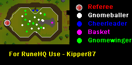

Gnome Ball
Introduction

There are two ways to play gnome ball, which is located in the Gnome Stronghold (northwest).
Before you start, you should have these:
At least 15 agility so you can get the ball back fairly easily.
At least 9 ranged so you can shoot and score a lot.
Food - lots of it. This is a rough game and you can get hurt up to 3+ damage.
To start, talk to the referee and he will ask if you want to play. Say yes! He will throw a ball up into the air and you will automatically take it.
The Hog Way
When you get the ball, take a route down the field that is least crowded with gnome ball players. If you get tackled, make sure that you see which gnome says "Hehe", or something like that. Right click on that SAME gnome and hit "tackle".Once you have the ball, figure out a way to get down the course, closer to the net. Run to the net. Now click on the net, and "shoot." If you miss go, back to the referee and try again. Otherwise you'll get a message saying that you've scored, and the gnome cheerleaders will cheer for you. Then give yourself a pat on the back and go back to talk to the referee.
Passing Way
Ok when you get the ball, go to one side of the court and you will see "pass to gnome baller". CLICK ON IT! Then it will say go long. Get as far as you can before he passes the ball to you. When you recieve the ball, quickly get close to the net and click the ball to shoot.If you miss go back to the referee and try again. If you score, a message will appear telling you. Now go back to the referee and try again. If you lose the ball after the baller passes to you, see which gnome says "hehe", then left click to tackle it. If you lose the ball before you pass the ball then do the same thing to get the ball, but then pass to the baller as soon as possible. After you pass to the baller, if it says "the gnome was tackled", then go back to the referee and get a new ball.
Reward
After you get 5 goals, you get an agility and range bonus, and your very own gnomeball. Note though that you must bank your gnomeball to get another one.This Mini-Game guide was written by Mini Dragon123. Thanks to Fudge, Kipper87 and graggle for corrections.
This Mini-Game guide was entered into the RuneHQ.com database on Thu, Mar 11, 2004, at 02:19:29 PM by DRAVAN and was last updated on Sun, Sep 25, 2005, at 01:33:41 PM by Fireball0236.